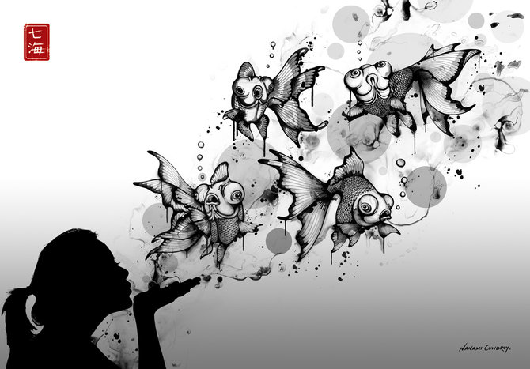
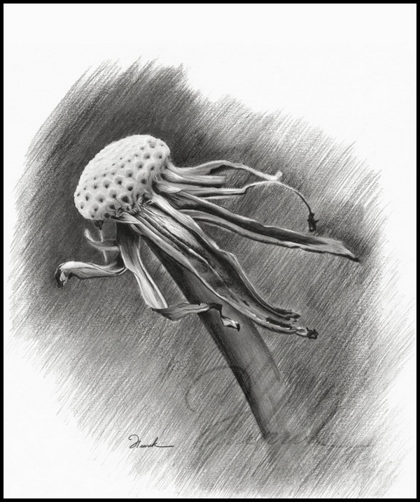

Графіка
Tрішки про графіку:
Графіка — це різновид мистецтва, назва якого походить від грецького слова, що в перекладі означає «пишу, дряпаю, малюю». Графіку можна вважати основою всіх образотворчих мистецтв. Адже основним засобом створення художнього образу у графіці виступає найпростіший для людини спосіб відтворення побаченого — лінія, штрих, які творять контур предмету або фігури.
З-поміж якого, малюнок — це найдавніший вид графіки, з нього і починається зародження образотворчого мистецтва. Найтрадиційнішим різновидом графіки й досі залишається малюнок.
Витоки малюнку можна знайти у наскельному живописі неоліту, у античному вазописі, середньовічній мініатюрі. Основою для малюнку слугували вологий пісок, пласке каміння, волога глина. З часом малюнки перенесли на керамічні вироби і тканини.
В Давній Греції головними виразними якостями графіки були лінії і силуети (античнийчорнофігурний вазопис, червонофігурний вазопис).
|  |  |  |
З епохи Відродження малюнок набуває самостійного значення у формі ескізів, альбомних замальовок, етюдів, які виконуються із застосуванням багатьох засобів: олівця, вугілля, крейди, сангіни, пера, пензликів і різних сортів чорнил, туші, акварелі.
Ускладнення графіки йшло разом з винаходом нових фарб — акварелі, гуаші, пастелі, темпери. Хоча в використанні цих фарб певну роль відіграє колорит, а також можливість використання багатьох фарб, що не притаманно первісній графіці.
З часом ускладнилися засоби друкованої графіки — офорт, літографія, ліногравюра тощо. Інший різновид графіки — гравюра або естамп (станкова графіка). Це вид графіки, в якому зображення є друкованим відбитком рельєфного малюнку, який виконується художником на тому чи іншому матеріалі. Існує дуже багато різновидів гравюри. Це гравюра на дереві та лінолеумі (ксилографія та ліногравюра), гравюра на металі, пунктирна манера, м'який лак, суха голка, офорт, літографія. При цьому висока художня вартість віртуозно виконаних малюнків не втратилася.
Вперед Вгору